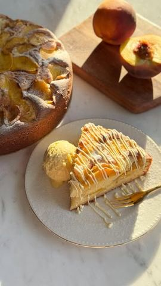

Moja beleška
SačuvanoSastojci
- Sastojci
- Dodatno
Priprema
1. U činiji pomešati brašno, prašak za pecivo i prstohvat soli. 2. U drugoj činiji umutiti jaja sa šećerom dok ne postanu penasta. 3. Dodati ulje, jogurt, aromu vanile i rendanu koricu limuna, pa sve sjediniti mikserom. 4. Postepeno dodati suve sastojke i kratko umutiti da se dobije glatka smesa. 5. Breskve oljuštiti i iseći na kriške, pa ih pomešati sa vanilin šećerom i cimetom. 6. Polovinu smese sipati u kalup prečnika 23–24 cm obložen papirom za pečenje. 7. Preko poređati deo breskvi, zatim sipati ostatak smese i rasporediti preostale breskve po vrhu. 8. Peći u zagrejanoj rerni na 180°C oko 50 minuta, dok lepo ne porumeni i ne bude pečen iznutra (probati čačkalicom). 9. Ostaviti da se malo prohladi, zatim izvaditi iz kalupa. Savet za posluživanje: Pospite ga šećerom u prahu, poslužite uz kuglu sladoleda od vanile dok je još topao ili ga prelijte otopljenom belom čokoladom – ko šta voli. 👉 Volite li vi ovakve jednostavne, a preukusne kolače?
Originalni opis sa Instagrama
🍑 Sočni kolač sa breskvama Sastojci: • 300 g mekog brašna • 2 kašičice praška za pecivo • prstohvat soli • 3 jaja • 180 g šećera • 180 ml ulja (biljno, maslinovo ili otopljeno kokosovo) • 270 g grčkog jogurta (može i kiselo mleko, ali u tom slučaju dodati 20gr brašna više) • 1 kašika arome vanile • rendana korica 1/2 limuna Dodatno: • 4 veće breskve • 1 vanilin šećer • ¼ kašičice cimeta (po ukusu) Priprema: 1. U činiji pomešati brašno, prašak za pecivo i prstohvat soli. 2. U drugoj činiji umutiti jaja sa šećerom dok ne postanu penasta. 3. Dodati ulje, jogurt, aromu vanile i rendanu koricu limuna, pa sve sjediniti mikserom. 4. Postepeno dodati suve sastojke i kratko umutiti da se dobije glatka smesa. 5. Breskve oljuštiti i iseći na kriške, pa ih pomešati sa vanilin šećerom i cimetom. 6. Polovinu smese sipati u kalup prečnika 23–24 cm obložen papirom za pečenje. 7. Preko poređati deo breskvi, zatim sipati ostatak smese i rasporediti preostale breskve po vrhu. 8. Peći u zagrejanoj rerni na 180°C oko 50 minuta, dok lepo ne porumeni i ne bude pečen iznutra (probati čačkalicom). 9. Ostaviti da se malo prohladi, zatim izvaditi iz kalupa. Savet za posluživanje: Pospite ga šećerom u prahu, poslužite uz kuglu sladoleda od vanile dok je još topao ili ga prelijte otopljenom belom čokoladom – ko šta voli. 👉 Volite li vi ovakve jednostavne, a preukusne kolače? • • • #kolac #ukusnirecepti #breskve #slatko #idejezadesert #brzoilako